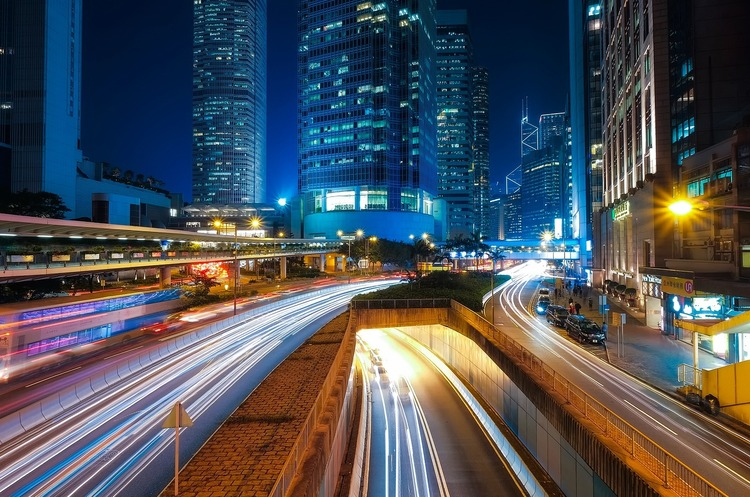
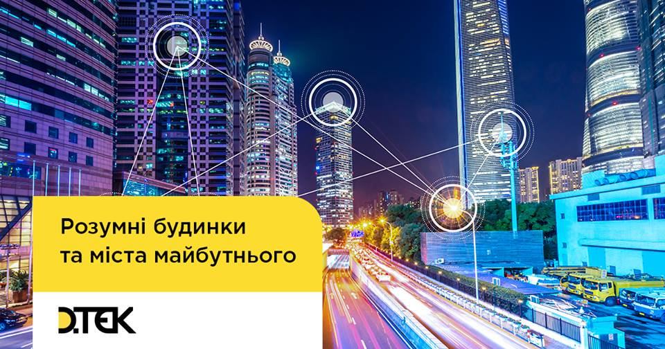

Галузі майбутнього
Сингапур, Лондон, Сеул, Берлін, Токіо... Що об’єднує ці п’ять міст, окрім того, що вони є столицями? Їх об’єднують технології, які стали невід’ємною частиною міського життя. Парковки, які містять датчики, що сповіщають водіїв про вільне місце; вуличне освітлення, яке починає працювати з появою перехожих; мобільні застосунки, які сигналять про потребу в невідкладній медичній допомозі або дозволяють отримати ліцензію на створення ресторану. Усе це – «розумні» міста.
«Найрозумнішими» ці міста є і тому, що їхня влада переконана: концепція Smart City полягає не тільки в облаштованих вулицях і діджиталізованих адміністративних послугах, але, у першу чергу, в комфорті громадян. Тому першочерговою складовою «розумного» міста є «розумні» будинки.
А зважаючи на те, що за прогнозами ООН, до кінця століття у містах житиме 84% населення, ця проблема дедалі актуалізується. Тому спеціалісти, які зможуть забезпечити місту статус «розумного», стають все більш цінними. Де отримувати освіту, куди подаватися, і власне, спеціалістом у якій галузі потрібно бути, аби стати одним із розробників «розумного» будинку чи творців «розумного» міста, досліджував Mind у рамках спецпроекту «Галузі майбутнього».
Розумне місто: теорія
Сьогодні, якщо місто не може похизуватися статусом smart, воно принаймні прагне до того. За своїм змістом, «розумне» місто є злагодженою системою технологій та інновацій, які використовуються для взаємодії з державними органами та отримання адміністративних послуг, у транспортній мережі та дорожньому русі, енергетиці та водопостачанні, охороні здоров’я, житлі.
Однак, будь-яке «розумне» місто має спільну мету: приносити користь його жителям, забезпечувати енергоефективність та економічність, а також дарувати суспільству найцінніший ресурс, якого катастрофічно не вистачає, – час. Дослідники з Juniper Research, британської аналітичної компанії, підрахували: справді «розумне» місто має потенціал повернути кожній людині 125 годин щорічно. Аналітики пояснюють, що досягти цього можна шляхом впровадження технологій ІоТ (інтернету речей. – Mind) та пов’язаних послуг у чотирьох ключових сферах: транспорт, охорона здоров’я, громадська безпека й отримання державних послуг.
Майже три доби (70 годин) людина втрачає щорічно під час використання транспорту. Проте «розумна» система, яка включає і систему паркування, і мобільні застосунки, і відкриту базу даних щодо заторів або коротких шляхів з пункту А до пункту Б, дозволяє зберегти 60 годин.
Де ще «розумні» системи здатні «повернути» час? Превентивні застосунки у галузі охорони здоров’я або телемедицина зберігають 9 годин щорічно. Ще 35 годин – «розумні» системи в охороні громадської безпеки, серед яких новітні системи відеоспостережень, прогностичні моделювання для пожежної служби та правоохоронних органів; а також мобільні застосунки у сфері надання адміністративних послуг – до 21 години на рік.
«Розумне» місто: практика
Починаючи з 2015 року, Juniper Research робить рейтинг «розумних» міст. Поки що першість отримувала Барселона у 2015 та Сингапур: у 2016 та 2017. Mind вирішив пояснити, чим вражають «найрозумніші» міста.
У чому «розум» Барселони? Цифрові чіпи в сміттєвих баках, які сповіщають про їх наповненість; міні-сенсори на парковках, які спрощують пошук вільного парковочного місця; зупинки, які містять табло з інформацією про прибуття транспорту та визначними пам’ятками. Ліхтарі, оснащені системами, які здатні вимірювати шум, трафік, забруднення, натовпи, навіть кількість селфі, які були залиті в мережу з цієї вулиці.
Як? Вони є своєрідними телекомунікаційними баштами з власною ІР-адресою, які миттєво, в реальному часі, подають інформацію в центр управління безпеки Барселони, де десяток інженерів навпроти екранів слідкують за звуковими сигналами й мерехтіннями. Щойно почнеться пожежа, прорве трубу або натовп п'яних туристів вийде на вулицю, скажімо, Ель Борн о 2 годині ночі, спеціалісти в центрі за рахунок системи ідентифікують проблему і зможуть вжити негайних заходів За словами Джорджі Альвія, керівника Сellnex, телекомунікаційної компанії, яка постачає технічне оснащення Барселоні, це і є вся система охорони та безпеки міста.
І хоча Барселона поступилася першістю Сингапуру, до 2018 року вона надала близько 47 000 робочих місць у сфері ІоТ, заощадила 42,5 млн євро на водокористування та забезпечила щорічні 36,5 млн євро у бюджет за рахунок «розумних» парковок.
Як Сингапур переплюнув Барселону
«Розумний» Сингапур – не лише віртуальний Сингапур. Це місто, де впровадження «розумних» систем – не просто ініціатива, а Національна смарт-програма. Отже, зусилля докладають не лише неурядові організації або компанії, які займаються телекомунікаціями й випуском цифрових технологій, але населення й уряд.
«Розумна» транспортна система
– це не лише «розумні» зупинки й автобуси. Це стартапи на кшталт nuTonomy, які за підтримки уряду тестують самокерований транспорт, який має намір запровадити Сингапур якомога швидше.
«Розумні» рішення у сфері охорони здоров’я – це дистанційне медичне обслуговування Telehealth, яке дозволяє консультуватися й лікуватися вдома. Завдяки спеціально розробленим планшетам, які фіксують рухи через камери та датчики, терапевти оглядають та аналізують стан пацієнта. Таким чином сингапурці навіть відновлювалися після інсульту. Це і онлайн-платформа, яка зберігає записи про стан здоров’я, а також взаємодіє з інформаційними системами з охорони здоров'я та державними установами (міністерствами та пунктами невідкладної допомоги).
У Сингапурі навіть створили застосунок, яким можна скористатися у разі потреби отримати першу медичну допомогу або допомогу при серцевих нападах. Натиснувши на кнопку, користувач сповіщає людей у радіусі доступності, зокрема і медпрацівників, про критичну ситуацію.
«Розумні» системи у взаємодії з державою – це онлайн-платформи уряду та відомств, які мінімізують потребу відвідувати держустанови. Відкрити банківський рахунок, зареєструвати народження дитини та знайти їй дитячий садочок через мобільний застосунок? Будь ласка.
Водночас, «розумний» Сингапур – це в першу чергу «розумні» будинки. Так, наприклад, у районі Юхуа було встановлено тисячі датчиків, що дозволило органам влади вимірювати енергію, виробництво відходів та використання води в режимі реального часу, а жителям – отримувати зворотній зв'язок, аби регулювати використання ресурсів удома.
«Розумне» місто: українські реалії
Насправді, Україна не стала винятком у глобальному прагненні стати частиною «смарт-світу». «Розумними» прагнули чи прагнуть стати Львів, Дніпро, Харків, Одеса, Київ. Проте наразі існує кілька перешкод, про які розповідали Mind представники київської та львівської ініціатив: час, фінанси, спеціалісти.
Час: тому що, хоч активісти і переконані в реальності своїх замислів, вони розуміють, що Україні потрібен час. На думку директора Департаменту інформаційно-комунікаційних технологій КМДА та співкоординатора ініціативи Kyiv Smart City Юрія Назарова, українським містам знадобиться від 10 до 15 років, щоб стати в один ряд із провідними «розумними» містами світу.
10-15 років вистачить, якщо «в розпорядженні буде достатнє фінансування, сприятливий інвестиційний клімат та, що дуже важливо, високий професіоналізм співробітників, які займаються смарт-рішеннями», – говорять фахівці.
Фінанси: тому що проекти потребують витрат на технології і спеціалістів. Навіть якщо міська влада певним чином залучена до проекту, бюджет все ж перебуває у її розпорядженні. Відтак, для впровадження «розумного» міста, необхідно в першу чергу знайти фінансування: через національні фонди, приватний сектор, міжнародний організації.
«Пошук коштів – завжди довгий і кропіткий процес. Європейським містам серйозну допомогу надають структурні та інвестиційні фонди ЄС. Наприклад, Валенсія на період реформ з 2014 по 2020 рік має бюджет у 1,140 млрд євро. І половину цих коштів виділяє ЄС – на розвиток «розумних» технологій, енергоефективності, малого і середнього бізнесу в регіоні. Тобто, впровадження технологій та інновацій у Валенсії спільно фінансується урядом і ЄС», – поділився з Mind Юрій Назаров.
Спеціалісти: сьогодні спеціалісти на українському ринку у різних сферах «розумного» міста та будинків з’являються і працюють. Однак, виконавчий директор Центру підприємництва львівської бізнес-школи, яка у свій час брала участь у впровадженні концепції smart city у Львові зазначив: «У кожній із цих сфер в Україні є хороші фахівці, які в межах своєї галузі можуть досягти визначних результатів. Але для того, щоб місто справді було Smart, є одна велика проблема – взаємодія».
У реалізації проектів «розумних» міст зацікавлені компанії із різних сфер. Наприклад, «ДТЕК Мережі» розробила інтерактивну карту електромереж Києва та планує відкрити такі ж карти Дніпропетровської та Донецької областей. Це спрощує надання послуг з підключення до мереж, а також демонструє нові принципи компанії у відносинах з клієнтами – відкритість та простота. Компанія має на меті реалізувати концепцію Smart Grid, аби перейти на автоматизоване керування електромережами та попитом.
«Для запровадження таких технологій потрібні ІТ-спеціалісти із різних галузей, – розповідає менеджер з технічного забезпечення «ДТЕК Мережі» Олексій Калайда. – Це два основних напрями: побудова цифрової архітектури мережі та зміни у сервісі. Архітектори мережі займаються моделюванням, прогнозують ситуації, оцифровують усі дані зі стану мереж. Такі спеціалісти працюють у європейських компаніях, тоді як в Україні цей напрям лише почав розвиток. Щодо сервісу – це створення мобільних додатків, чат-ботів, хмарні рішення».
Звичайно, найбільше такі проекти цікавлять компанії, які безпосередньо працюють у ІТ-секторі та займаються цифровими технологіями й інтернетом речей, адже такі розробки відкривають абсолютно нові ринки для технологій та послуг. Так, згідно з останніми оцінками McKinsey, світові доведеться інвестувати в інфраструктурні проекти протягом 2016-2030 років близько $49 трлн, лише щоб підтримувати очікувані темпи економічного зростання.
Хто інвестує? Проаналізувавши різні рейтинги, можна зробити висновок, що головними гравцями є такі компанії, як General Electric, Intel, Microsoft, Amazon, IBM, Google, Cisco, Huawei, Qualcomn, AT&T, Verizon, Schneider Electric, Siemens, Toshiba.
Проте серед партнерів українських «розумних» міст цих компаній поки що немає. Так, наприклад Smart City Kyiv підтримується кількома державними організаціями: КМДА, «Укрпошта», Prozorro. Свій внесок у розвиток «розумних» міст роблять і платформи для популяризації ідей (ВДНГ), фонди (німецький фонд імені Фрідріха Еберта та Renaissance), компанії, що займаються програмним забезпеченням (SAP, Kitsoft, КП «Інформатика») та інші. Також підтримку проектам «розумних» міст в Україні надають навчальні заклади, як наприклад, КПІ в Києві чи Український Католицький Університет у Львові.
Незважаючи на підтримку з боку місцевої влади й різноманітних організацій, очевидно, що українські міста лише на старті свого марафону до статусу «розумне місто». Тим не менш, уже сьогодні в Україні відбуваються зміни і запозичується інноваційний досвід.
«Якщо подивитися на наш проект «Відкритий бюджет», то це Бостон. Проект електронної демократії – Монреаль і Ванкувер, міста, де найбільш розвинена демократія взагалі. Що стосується управління транспортом – електронний квиток, диспетчеризація – для нас зразковими є Барселона і Лондон, а також Таллінн і Сеул. Системи безпеки – Лондон, Сингапур і Тель-Авів. Прикладом розвитку інноваційного середовища та впровадження стартапів є Амстердам», – пояснив Назаров.

Будинки: «розумні» мікросистеми
«Розумний» дім – це керування кліматом, вентиляцією, світлом, усіма електричними приборами й системою охорони за допомогою одного пульту або смартфону. Датчики, розташовані по будинку, реагують на будь-які зовнішні зміни (температура повітря, час доби, присутність сторонніх) і дозволяють власнику контролювати будинок, коли він поза його межами; слідкувати за рівнем споживання води та енергії через електронні пристрої, керувати технікою за допомогою голосової системи.
«Розвиток технічних рішень у цій категорії і загальна діджиталізація мас-маркету вже призводять до високого запиту з боку споживачів на недорогі, але високотехнологічні продукти готові до швидкого встановлення і використання. Ми це бачимо на прикладі нашого продукту Розумний WATT. Споживачу цікавий новий досвід, який не потребує серйозних технічних навичок і залучення фахівців для встановлення та використання приладів. Але натомість дає можливості автоматизувати рутинні побутові сценарії аби підвищити комфорт та безпеку свого житла, і значну економію на комунальних витратах внаслідок раціонального використання ресурсів», – пояснив директор ДТЕК ЕСКО Євген Бушма. Наразі компанія готується вивести на ринок ще декілька нових та доступних рішень в категорії «розумний будинок».
«Розумний» дім – це енергозберігаюче освітлення, wi-fi розетки, підключені до смартфонів, «розумні» телевізори з надякісним звуком та зображенням, роботи-пилососи, і звичайно ж «розумні» лічильники, які забезпечують енергоефективність житла та економію, адже в день та вночі тарифи відрізняються.
Варто зазначити, що у світі «розумні» лічильники, як базова складова «розумних» систем, дуже популярні. Так, наприклад, мультинаціональна енергокомпанія Enel, що обслуговує щонайменше 70 млн користувачів у 35 країнах, забезпечила «розумними» лічильниками 100% своїх клієнтів. Україна ж поки тільки розпочинає таку практику. Як запевнили Mind у ДТЕК, що є лідером у сфері встановлення «розумних» лічильників в Україні, лише 10% клієнтів на сьогодні надають перевагу таким технологіям.
Тим не менш, низка українських забудовників зараз вже пропонує облаштувати дім чи квартиру, які будуть оснащені комплексними «розумними» системами. Водночас є можливість купити систему і встановити її в уже збудоване житло.
Проте, концепція «розумного» житла не новинка 21 століття. Push-Button Manor – перший «розумний» будинок, розроблений американським інженером Емілем Матіасом в 1950 році для своєї сім'ї. Це 2 км дротів та декілька кнопок, які забезпечили дистанційне керування освітленням, воротами гаража, шторами, побутовими приладами та механізмами, плюс система безпеки і сигналізації. Після Матіаса ще не один винахідник 20 століття вводив «розумні» технології в будинок, аби полегшити життя.
Сьогодні «розумне» житло набуває все більшої популярності серед мешканців та забудовників. Так, якщо наприкінці 2016 року в Європі було 8,6 млн «розумних» помешкань (3,8% усього житла в Європі), то до 2021 року очікується, що їх кількість збільшиться до 80,6 млн «розумних» будинків. У свою чергу, доходи ринку за 2016 рік зросли на 69% і склали 2,7 млрд євро ($3 млрд). За прогнозами, до 2021 року доходи збільшаться на 49% і сягнуть 20,1 млрд євро ($22 млрд).
Спеціалісти: хто створить містам та будинкам «мізки»
Якщо прогнози Cisco Systems справдяться, до 2050 року понад 60% населення планети проживатиме в містах. Саме тому зовсім скоро знадобиться велика кількість фахівців, які забезпечуватимуть функціонування «розумних» міст та будинків.
Поруч з ІТ-спеціалістами, розробниками мобільних застосунків та класичних знавців конкретних сфер, з’являться будівельники «розумних» доріг, IT-медики, інформаційні стилісти чи проектувальники роботів.
Mind пропонує звернути увагу на такі перспективні професії:
Фахівець з машинного навчання (Machine Learning). Директор з маркетингу та ринкової стратегії Sierra Wireless, канадського виробника обладнання для бездротового зв’язку, Ремі Маркоторчіно вважає, що спеціаліст з машинного навчання відіграє ключову роль у розвиткові «розумних» міст та будинків. Його завданням є навчити комп’ютер вирішувати складні задачі, які важко вирішити алгоритмічно. Саме ці фахівці «навчають» комп’ютери розпізнавати людські обличчя чи інші об’єкти, діагностувати захворювання, керувати автомобілем та «розумним» трафіком. Середня заробітна плата фахівців з машинного навчання у США – $140 000 на рік.
Архітектор хмарних систем (Cloud architect). Завданням хмарного архітектора є раціоналізація різноманітних застосунків і створення потенційно єдиної платформи для інтеграції міста з обраними застосунками (щодо парковки, освітлення, моніторингу датчиків, управління водою тощо). Середня річна зарплата архітектора хмарних систем у таких компаніях, як Amazon чи Microsft – $140 000. Проте в Україні цей напрямок лише почав розвиватися.
Дизайнер віртуальної реальності (VR). VR-дизайнери у сфері «розумних» міст створюють і забезпечують функціонування точної копії міста, яка існує на екрані в онлайн-режимі. Завдяки віртуальному місту його жителі можуть дізнаватися про рівень забруднення в тому чи іншому районі, наявність заторів і вільного паркомісця. В залежності від ПЗ, розробники застосунків в Україні можуть заробляти від 25-100 тисяч грн на місяць.
Архітектор енергонульових (активних) будинків. За прогнозами, попит на спеціалістів з будівництва активних будинків почне рости у 2020 році. Енергонульові будинки є не просто енергоефективними, вони здатні виробляти більше енергії, ніж споживати. Таким спеціалістам потрібно буде мати знання не тільки в будівельній інженерії, але й, наприклад, в енергоаудиті.
Інженер з енергоефективності. «Розумне» місто повинне бути «стресостійким» і стабільним. Тому управління споживанням енергії відіграє важливу роль: не має значення, чи мова йде про один смартфон на батареї, чи комп’ютери в центрі обробки даних, які використовують мільйони кіловат електроенергії щорічно. В середньому такі спеціалісти у світі заробляють близько $85 000 на рік.
«Розумні системи»: де отримати знання. «Опанувати такі професії раз і назавжди неможливо, оскільки технології постійно розвиваються. Уже зараз важливо розуміти, що фахівців зі smart-рішень чекає безперервне навчання», – говорить співкоординаторка київської ініціативи Smart City Ярослава Бойко.
Професії майбутнього з’являються швидше, ніж складається програма на наступний рік в університетах. Саме тому професії у галузі «розумних» міст та будинків найкраще опановувати на курсах.
Наприклад, у Львівській IT-школі пропонують навчитися Machine Learning. Найшвидшим та найефективнішим шляхом до знань у даній галузі є онлайн-навчання.
Це україномовні платформи як The Future, що пропонує загальні знання у сфері «розумних» міст, або Prometheus із курсами щодо Аналізу даних. Водночас існує безліч англомовних курсів.
Coursera пропонує платні курси: Архітектура Smart IoT пристроїв, 3D-моделі для віртуальної реальності, Вступ до IoT та вбудованих систем.
EdX пропонує безкоштовні курси: Управління «розумними» міськими інфраструктурами, Дизайн комп'ютерних систем для енергоефективності, Machine Learning.
FutureLearn пропонує безкоштовний курс «Розумні міста «.
Академічна освіта також рухається в бік майбутнього. Наприклад, «Львівська Політехніка» в цьому році представила магістерську програму «Смарт Сіті». Водночас, Kyiv Smart City розповів про спільні курси з КПІ. Зокрема, у травні завершився курс Arduino з основ технічного конструювання та робототехніки, який знову стартує восени. Окрім того, невдовзі на базі КПІ розпочнеться ще один їх спільний проект – курс механотроніки.
